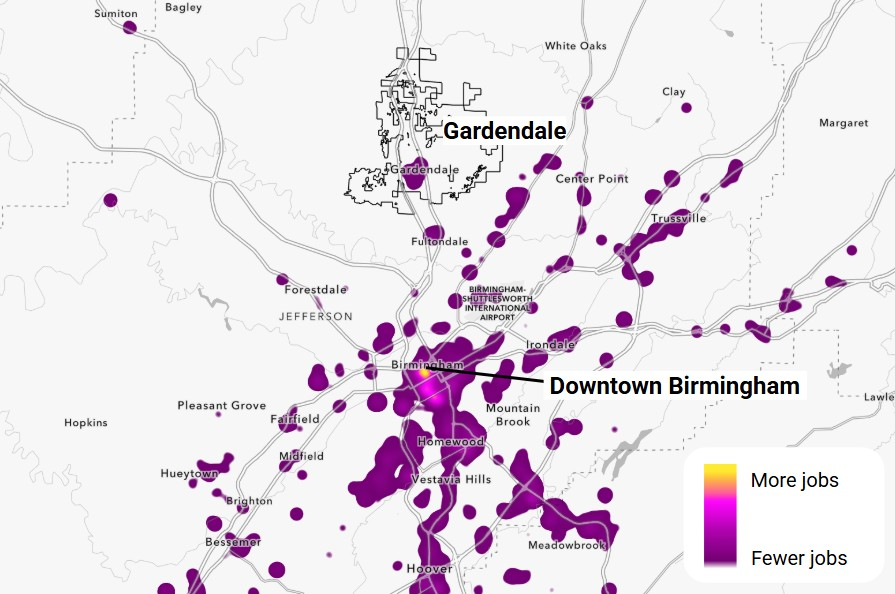
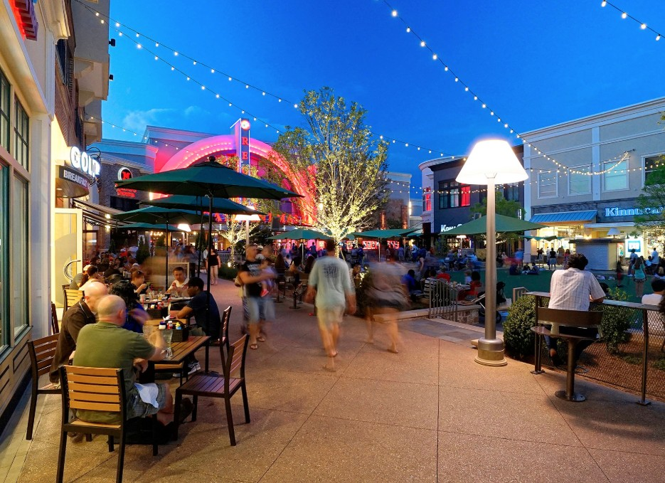
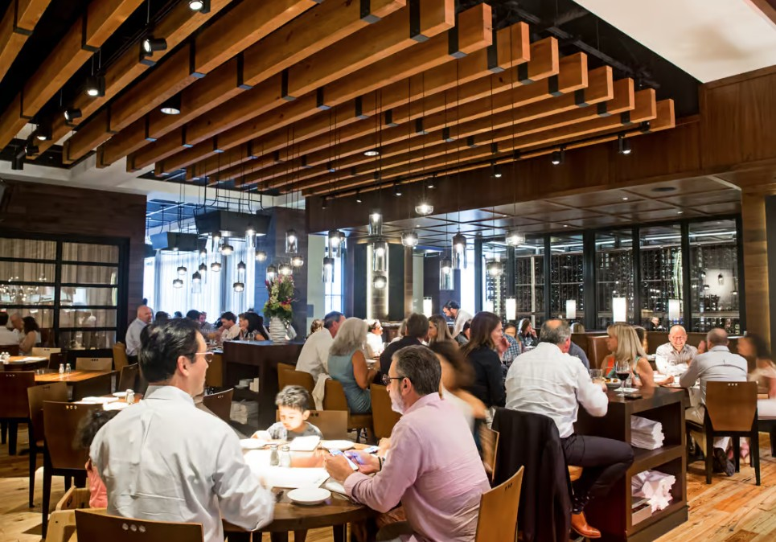
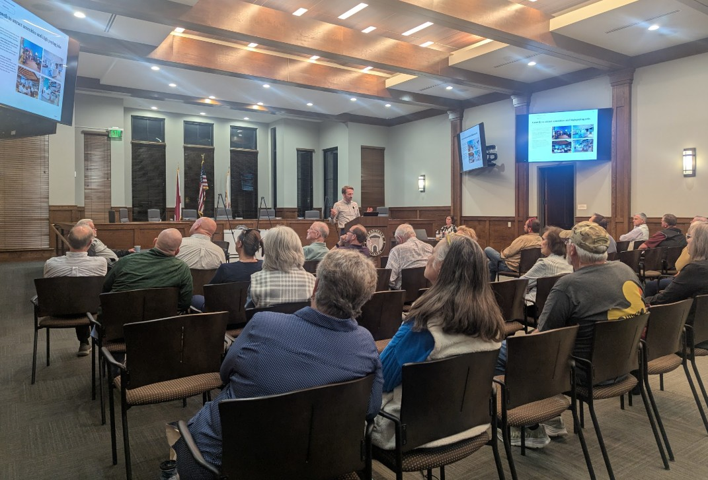

Gardendale includes people of all income levels, though higher incomes are more common.
This study measures household characteristics and housing need in terms of household incomes relative to the local Area Median Income (AMI). For example, households within the "60-80%" group earn between 60% and 80% of the HUD-established AMI for the metro area.
Each household AMI group has a different range of affordable housing costs. The right two columns indicate the maximum home price and rent affordable to each.
Gardendale is still affordable, but not as affordable as it used to be.
This chart compares the median listing price in Gardendale with the home value attainable to a household earning the median household income. A wider gap means higher barrier to entry for first-time homebuyers and increased risk that an existing resident might be priced out of the community if they choose or need to move to a different house. Affordability is based on the county’s estimated median income. Actual affordability levels for specific properties vary based on variation in the above variables as well as possible additional costs for some units such as condominium fees.
Many lower-income households in Gardendale cannot find housing they can afford.
Households are cost burdened when paying more than 30% of their income on housing costs. They are considered severely cost burdened when these costs exceed 50% of their income.
For renters, this includes lease rent and utilities. For homeowners, this includes mortgage costs, property taxes, insurance, utilities, and any condo fees.
While Gardendale is home to many aging seniors, it is also attracting families with young kids.
Unlike many other parts of the country where an aging population is the major headline, most of Gardendale’s projected growth is concentrated among younger cohorts. However, there is also growth at the older end of the spectrum too.
Each age group has different housing preferences, such as larger homes for families or a mix of smaller ownership and rental options for young adults and seniors interested in downsizing.
Gardendale is more than just a bedroom community, but it’s not a major employment center either.
Though technically more of a bedroom community than a job center, Gardendale has a somewhat balanced jobs/workers mix. However, a very small portion of people both live and work in town.
| People who live here |
6,943 |
| People who work here |
5,118 |
| People who live and work here |
403 |

Employment concentrations across the Birmingham region (Source: Census Longitudinal Employer-Household Dynamics (LEHD) 2022).
Gardendale does not have enough housing options attractive to most professionals and job creators.
Job creation, talent attraction, and workforce retention can be influenced by the availability of housing options that meet the preferences and affordability constraints of prospective employees.
The top table summarizes the home prices and rent levels that would be attainable to typical employees in essential workforce professions. It will be easier to keep these important jobs filled if workers can find attainable housing nearby.
The bottom table indicates pricing attainable to professionals in knowledge sector jobs. These workers may prefer to live (and work) in a community that offers housing at moderately high price points along with amenities that support a good quality of life.
Gardendale is projected to grow by about 1,000 households over the next 10 years.
RPCGB projects Gardendale will be home to 7,552 households by 2035, implying growth will accelerate somewhat in the coming decade compared to the last 15 years. However, this is growth can only be realized if enough housing units are created at the same pace to accommodate it.
Housing construction has slowed recently, but new projects in the pipeline will help keep up with growth.
Building permitting history is a proxy for construction activity over time. Gardendale’s permitting has gradually slowed over the past 10 years with the exception of a large development permitted around 2020. However, there are over 500 units in the pipeline, including single-family for sale and single-family for rent products.
Sustained growth is necessary to keep the City running - and more housing offers other benefits too.
Continued growth is necessary to offset rising municipal costs without increasing taxes or cutting services. The best way to keep up with rising municipal costs is to sustain growth in the tax base. While growth in other land uses can contribute to this, housing has been and would continue to be the primary. Also, without ongoing household growth, other uses like retail and employment could see their growth start to plateau in turn.
Building for professional workforce can help attract more white collar jobs. Gardendale’s current housing stock may not be competitive with other places in the region at attracting professional talent and the jobs that follow.
Create a place everyone can enjoy. Concentrating housing around a Town Center can underwrite amenities like public space, shops, restaurants, and walkable streets that improve quality of life for existing residents in addition to attracting new jobs and investment.
Changing demographics driving increased demand for alternatives to the traditional single-family option. This includes existing Gardendale residents, such as empty nesters, downsizing seniors, and young people who grew up here starting new households.
Denser housing has a higher fiscal ROI. From smaller single family lots to townhomes, apartments, and condos, higher density translates into higher tax base per acre.
Density can be contained to just where it is desired and manageable. Good planning keeps development where it makes sense and away from where it doesn’t.


Dozens of residents attended the February housing workshop to engage with the process.
To inform this Housing Needs Assessment and the housing element of the comprehensive plan, the City held a housing workshop on February 27, 2025 which was attended by dozens of local residents and stakeholders.
The workshop included a presentation followed by a session of interactive activities designed to collect targeted feedback and ideas from participants.
Prior to the workshop, the project team met with a panel of local leaders and real estate professionals for a discussion about the Gardendale housing market and development economics.
Meeting materials such as the presentation slides and a recording are available on the project website.

Residents love their community - but they are also open to change, as long as it is carefully managed.
Top responses from public engagement activities
What do we want to get out of growth?
- Dropping homestead rate
- Shrinking school enrollment
- Emerging labor shortage
- Rapidly aging population
Who should we grow for?
- Downsizing seniors
- Mid-career families upgrading
- Retirees seeking active lifestyles
- Young families
Where should new housing be located?
- New town center around Main Street / Fieldstown Road
- Neighborhood centers and infill housing adjacent to Highway 31
- New housing on unbuilt land around the City’s periphery
Takeaways from the online survey:
- While Gardendale’s current housing stock is well suited to a significant segment of the population, unmet needs include larger and more expensive houses as well as options for downsizing seniors.
- Gardendale’s limited housing variety leads some to move elsewhere instead, even if they would rather live in Gardendale for family or community reasons.
- There is support for a range of community amenities that could be supported through new housing development and related investment, especially retail, restaurants, entertainment, town square, parks, and trails.
Housing strategies for consideration.
This study has resulted in a set of policy recommendations to help the City promote its housing goals and manage growth toward the community’s vision for its future. The suggested approaches at right reflect opportunities we have identified through the planning process.
Each approach brings advantages and challenges related to cost-benefit criteria such as:
- Timeframe: How long will it take?
- Cost to the City: Can we afford to do it?
- Staff capacity: Is current staffing sufficient?
- Political risk: Will the community support this?
- Community benefit: What is the return on investment?
Incentivize New Development that Meets Housing Goals
Streamline the Permitting Process
Facilitate Use of Federal and State Housing Funds
Pursue New Housing Typologies and Creative Approaches
Update Zoning to Increase Housing Flexibility and Density
Leverage Public Land Assets for Housing
Develop a town center
Monitor progress